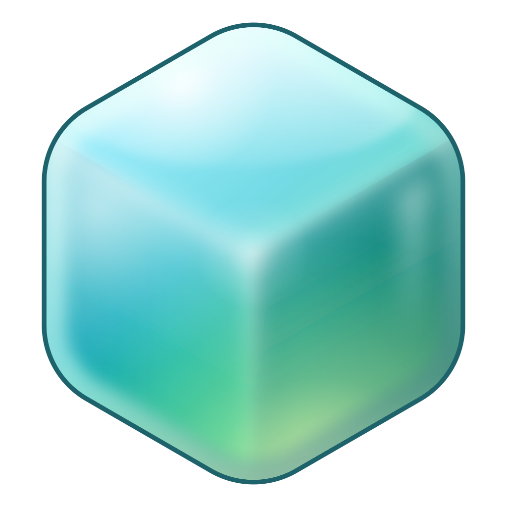
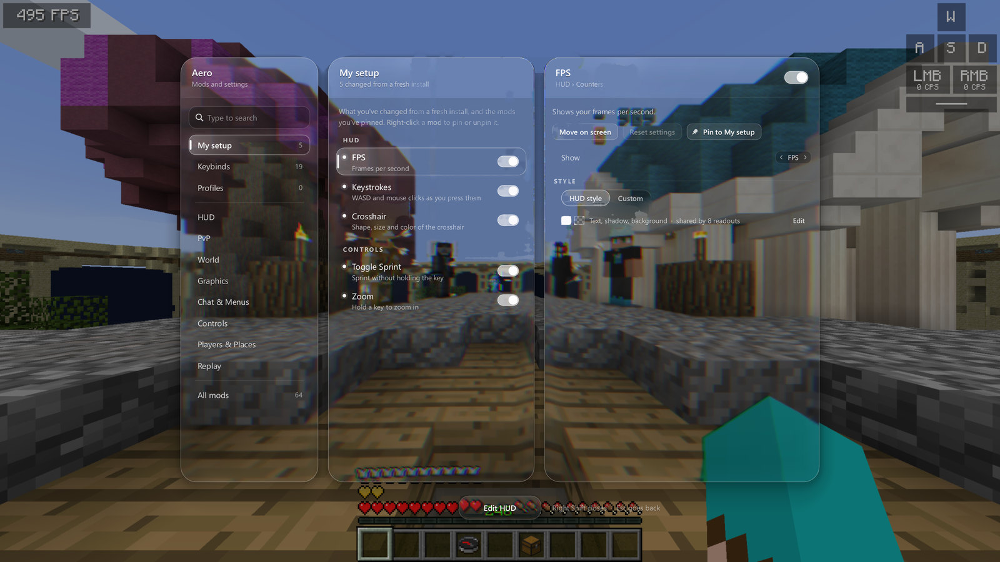
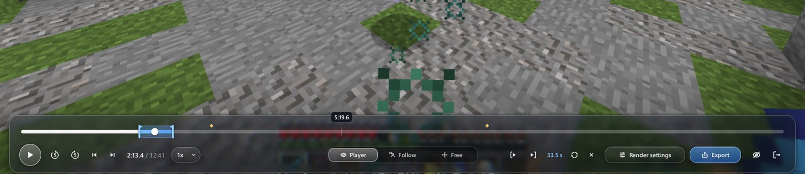

Built for frame time
A modern GPU renderer built from the ground up for frame time. Players have seen substantial frame-rate improvements over other clients.

A fast, clean client for Minecraft: Java Edition 1.8.9 multiplayer. Written in Rust, with the PvP mods you actually use built in.
Free. Needs a Microsoft account that owns Minecraft: Java Edition.
NOT AN OFFICIAL MINECRAFT PRODUCT. NOT APPROVED BY OR ASSOCIATED WITH MOJANG OR MICROSOFT.
Aero Client is a new client built for one version: 1.8.9, for multiplayer. It joins ordinary 1.8.9 servers and is built to play like the original game, only faster and with your tools built in.
A modern GPU renderer built from the ground up for frame time. Players have seen substantial frame-rate improvements over other clients.
We aim for parity with the original 1.8.9 client: with a mod off, the same packets, the same movement and the same visuals. Parity tests check it as the client changes.
HUD readouts, PvP tweaks, chat tools and graphics options in one menu. Nothing to install, and a mod that's off costs nothing.
Record your games and watch them back from your own view, following any player, or with a free camera. Cut clips and export video up to 4K.
Optional shader packs (Classic, Dreamy, Underwater), volumetric clouds, ambient occlusion, anti-aliasing, motion blur and color grading.
Right Shift opens a glass menu with search, a "My setup" page of what you changed, profiles and an on-screen HUD editor.
No cheats. Nothing aims, clicks or fights for you, and nothing shows what the game hides. Every mod can be switched off, and servers' rules still apply.
You sign in on Microsoft's own page. No Aero Client account, no telemetry, no ads, and no server of ours in between. See the privacy policy.

Press Right Shift in game or on the title screen.
Replays are off until you turn them on. Then recording starts when you join a server or press a key, with a small red dot while it runs. Afterwards you can watch from your own view, follow any player or fly a free camera, mark a range and save it as a clip, and export video at up to 4K with game sound. Recordings stay on your PC unless you share them yourself.

Sign-in, servers and bans, your data, replays: the FAQ has the answers.
Aero Client is experimental. We aim to make it behave exactly like the original 1.8.9 client and test it against that client, but we can't guarantee that it matches in every case.
Servers decide which clients and mods they allow, and some check how clients behave. Use your own discretion when you play on servers with Aero Client: read each server's rules, and switch off any mod it doesn't allow. You play on servers at your own risk, and we are not responsible for bans or any other action a server takes against your account.